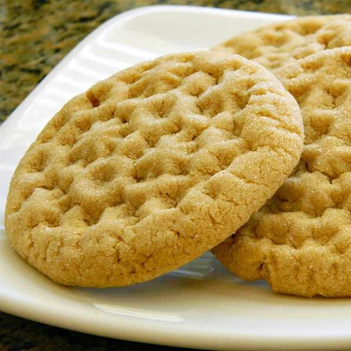

Cookies

- ¾ cup butter, softened
- ¾ cup brown sugar
- 2 cups all-purpose flour
- Preheat oven to 350 degrees F (175 degrees C). Line a baking sheet with parchment paper.
- Beat butter, brown sugar, and 3/4 cup white sugar with an electric mixer in a large bowl until smooth. Add cookie butter and peanut butter; beat until fluffy. Mix flour, egg, baking soda, baking powder, and salt into the butter mixture creating a cookie dough. Roll dough into teaspoon-size balls.
- Spread 1/3 cup sugar into a shallow dish. Roll dough balls in the sugar to coat and arrange onto the prepared baking sheet. Press dough balls with a fork twice to flatten slightly and press a crosshatch shape into the top of the cookies.
Back to Home